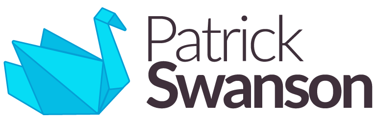
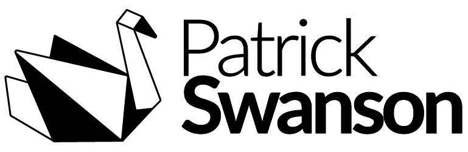
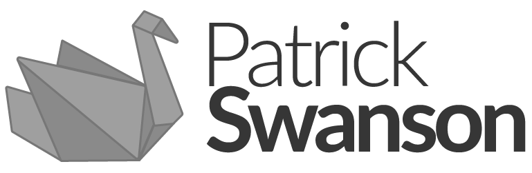
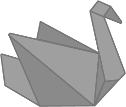
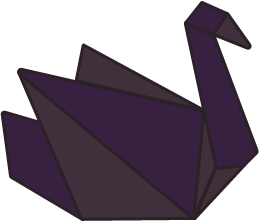
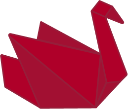
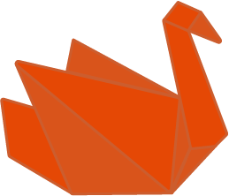

These logos are a representation of both my name and qualities. Origami is a craft of fine detail and patience, which are two qualities I see in myself. Color variations compliment the overall theme, allowing any version to be used within the design system.
Logo Variations
Full Logo

Primary Logo - Full - Color - Light Version
This logo is the primary version for light-mode configurations. Used for main branding when space is available.
Primary Logo - Full - Color - Dark Version
This logo is the primary version for dark-mode configurations. Used for main branding when space is available.

Primary Logo - Full - Black & White
This logo is a black & white version, used when color can't be used. Used for main branding when space is available.

Primary Logo - Full - Grayscale
This logo is a grayscale version, used when color can't be used. Used for main branding when space is available.
Secondary Logo (Swan)
Secondary Logo/Favicon - Blue Swan
This logo is the secondary version of the primary logo. The secondary logo is also used for the favicon of the website. This should be used when space is limited such as tablet/mobile views.

Secondary Logo Alternate - Grayscale Swan
This logo is an alternate grayscale version of the secondary logo.

Secondary Logo Alternate - Purple Swan
This logo is a fun variation for special themed usage only.

Secondary Logo Alternate - Magenta Swan
This logo is a fun variation for special themed usage only.

Secondary Logo Alternate - Orange Swan
This logo is a fun variation for special themed usage only.